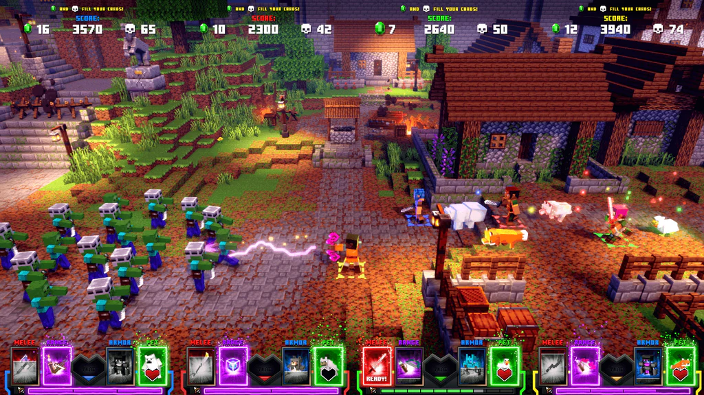
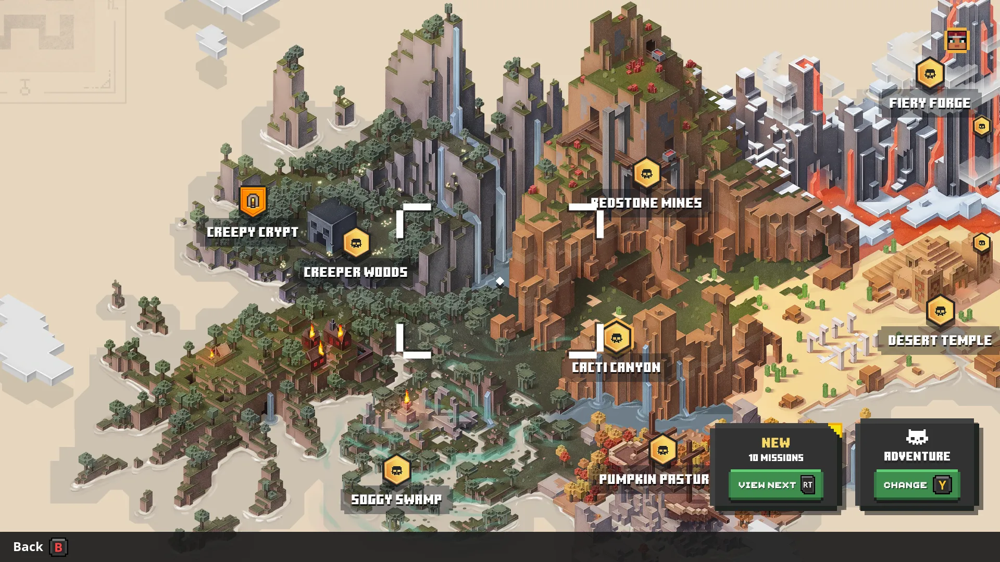

В Minecraft можно построить что угодно, что наглядно доказывает эта увлекательная игра-бродилка
от Mojang.
Minecraft славится своим творческим режимом — опцией, которая
дает вам
бесконечный
запас цифрового Lego для игры. Это место, где люди строят копии своих университетов или
Сикстинской
капеллы или той большой башни из Властелина колец. Но для меня Minecraft всегда был связан с
выживанием.
Там я строю из блоков, которые сам выкопал из земли, отбиваясь от монстров и пожирая печеный
картофель,
чтобы продолжать идти.
Обзор Minecraft Dungeons
Minecraft всегда был RPG, вот что я пытаюсь сказать. И поэтому, хотя
Minecraft
Dungeons может показаться маловероятной концепцией — более доступной Diablo с криперами — в
конечном
итоге он ощущается естественным продолжением формулы. Minecraft определяется своим игровым
циклом:
ныряние под землю в поисках ресурсов, а затем возвращение на солнечный свет для строительства.
Уровни
подземелий просто раздают свои призы в обмен на победу над врагами Minecraft, а не просят вас
выковыривать драгоценные камни из стен.
От начала до конца, Dungeons — не длинная игра. Она содержит девять биомов,
каждый из
которых содержит уровень, основанный на определенной теме, с парой секретных областей,
добавленных для
пущей убедительности. Вопреки своему названию, большинство этих биомов на самом деле вовсе не
подземелья, а разрушенные деревни или пустынные равнины, болота, каньоны, замки и пастбища. У
каждого
есть особая фишка — например, Redstone Mines, уровень которых украшен быстро движущимися путями
для
вагонеток, которые постоянно пересекают ваш путь, как мишура на рождественской елке. Это плохие
новости
для вас, если вы стоите на пути, когда вагонетка проезжает, или хорошие новости, если вы вместо
этого
согнали врагов на ее путь. Это также первое место, где вы встречаете огромного Redstone Golem,
одного из
самых карающих мини-боссов игры, который столкнет вас в ближайший бассейн лавы, если вы хотя бы
взглянете в его сторону.

Враги сначала берутся из знакомого пула, поэтому используйте их в качестве
удобного
сокращения для того, как с ними справиться, когда они нападают на вас толпами. Все знают, что
делает
Крипер, когда он подходит слишком близко, или что скелеты предпочитают атаковать с расстояния,
стреляя
стрелами. Чародеи усиливают ближайших союзников, поэтому вам нужно избавиться от них в первую
очередь, в
то время как ведьмы бросают зелья с пузырящимися лужами яда. Dungeons лучше всего, когда он
бросает в
вас дюжину или больше этих врагов одновременно в обработанной смеси, часто в тесных областях,
где
маневренность низкая, и вам нужно жонглировать способностями и движением, чтобы справляться с
новыми
волнами проблем на лету.
Как вы это сделаете, зависит от вас и ваших друзей, которых вы взяли с собой
(есть поддержка четырех игроков локально или онлайн). Dungeons имеет масштабируемую систему
сложности, которая подстраивается под большее количество игроков и поощряет повторную игру. Но
она также блокирует более низкие уровни сложности, которые она считает слишком легкими для
вашего уровня силы. Она щедра в том, что дает всем персонажам три бесплатных возрождения за
уровень (и сохраняет урон босса, если вы все погибнете во время большой схватки), но ее области
часто длятся довольно долго... По опыту могу сказать, что очень легко потерять жизнь или две,
пока вы тратите полчаса на зачистку каждого сундука и исследование каждого угла — полчаса,
которые вам потом придется повторять с нуля, если вы упадете до финального босса этого уровня,
просто потому, что вы не дали себе возможности попробовать и разработать стратегию.
Dungeons не имеет системы классов или постоянного дерева навыков, хотя вы
можете прокачивать нескольких персонажей, если захотите. Вместо этого у него есть оружие и
доспехи с ограниченным количеством перков, которые можно выбирать и улучшать, а также три слота
для артефактов, изменяющих игровой процесс. Эти предметы ближе всего к классовым чертам, которые
дарует Dungeons, хотя все они могут быть заменены в любой момент, даже на среднем уровне, если
вы сможете найти тихое место, чтобы открыть свой инвентарь. Некоторые артефакты просты,
например, взрывная стрела-фейерверк или барьер, который вы можете вызвать, чтобы блокировать
входящие снаряды. Но некоторые из них удивительно сложны, например, артефакт Harvester, который
высасывает души всех павших врагов, чтобы заполнить счетчик энергии, который вы затем можете
взорвать в большом радиусе.
Я несколько раз менял свой стиль игры в своей первой пробежке по карте биома
Dungeons. Поначалу я начал довольно осторожно, сосредоточившись на дальнобойных способностях,
которые соответствовали моей броне спелеолога, которая дала мне злобную летучую мышь. Но по мере
того, как уровни шли, я обнаружил, что все чаще застреваю в середине сражений, и именно здесь я
обнаружил, что артефакт Harvester постепенно становится неотъемлемой частью моего персонажа.
Используя оружие ближнего боя и доспехи, которые оба усиливали получение душ, я мог вбежать в
центр вражеского скопления и взорвать себя, а затем немедленно собрать врагов, которых я только
что убил, восполнив свою шкалу душ, чтобы снова пойти. Это работало отлично, пока враги не стали
еще сильнее, и я выбрал средний подход, один с механикой душ для зачистки толпы, но также и с
скоплением огненных стрел, которые наносят урон с течением времени, чтобы позволить мне
держаться на некотором расстоянии.

Завершите кампанию игры, и вы откроете первый из двух более сложных режимов
сложности, каждый со своим собственным выбором усиленных врагов и более редкой добычей, чтобы
еще больше настроить свой стиль игры. По-видимому, есть способ призвать питомца Железного
Голема. Я хотел бы найти артефакт или броню, которые позволят мне это сделать. Я уже обнаружил,
что снова прохожу несколько миссий просто ради немного большего количества опыта и чтобы забрать
некоторые из их потенциальных наград, которые мне еще предстоит найти. Система процедурной
генерации Dungeon работает хорошо — каждое прохождение ощущается достаточно разным с точки
зрения макета, с мини-боссами, разбросанными в случайных точках в качестве сюрпризов, и каждый
биом ощущается отдельным.